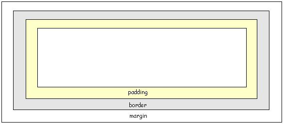

Otra serie de propiedades relacionadas al contorno de un elemento HTML son:
margin margin-top margin-right margin-bottom margin-left
El margen está después del borde.
El margen separa un elemento HTML de otro elemento HTML dentro de la página.
Veamos un ejemplo, la página HTML muestra dos párrafos con cero pixeles de margen:
<!DOCTYPE html> <html> <head> <title>Problema</title> <link rel="StyleSheet" href="estilos.css" type="text/css"> </head> <body> <p>Primer párrafo</p> <p>Segundo párrafo</p> </body> </html>La hoja de estilo:
p {
background-color:#ffffaa;
margin:0px;
border-width:1px;
border-style:solid;
border-color:#ff0000;
}
Hay que tener en cuenta que cuando dos elementos HTML uno debajo del otro hay especificado márgenes el resultado final del margen inferior de uno y el superior de otro no se suman. Por ejemplo si un elemento tiene márgen inferior de 10 y el elemento que se encuentra debajo de este tiene márgen de 20px luego el márgen total entre estos dos elementos es de 20px (es el mayor de los dos márgenes y no 30px que es la suma)
Pruebe modificar el valor para la propiedad margin y vea el resultado de la página.
El modelo final de caja se puede resumir con esta imagen:
